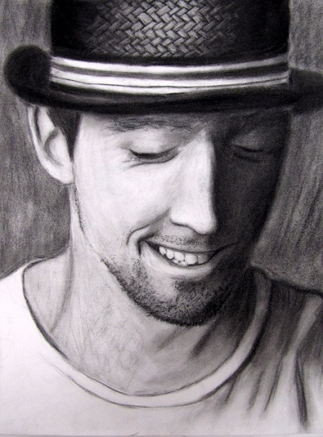

My primary passion before design has always been art. I started drawing when
I was 7, but the interest in fine arts and crafts didn't cease there. Whether
it's sketching, painting, sculpting, jewelry making, constructing, screen printing,
photography, candle making, even baking-- anything that I can do with my hands is the thing
I enjoy most as a passtime, and I utilize my eyes and hands combined to be
my greatest artistic instruments. My artwork most relevent to design includes paintings,
drawings, and photography, which are detailed down below.

Portrait: Jason Mraz
This piece is made with charcoal and is 11" by 17". I have a high preference
for faces and the human expression, in their face or their body or both.
I often enjoy practicing portraiture of artists in the media that I like,
especially in the other industry that I love: music. Charcoal and pencil
are the mediums where I am most comfortable and experienced. This drawing
was completed in 2011, age 17.

CAD Drawing: Hipster Fox
I created and drew this character when I was first learning Adobe Illustrator.
Not only did this class project make me understand the tools in Ai, but it
introduced a program that I call home for much of my graphic design work.
I used the tools at hand to create artwork this time, but it also made me
fluent with the adobe tools as well. This fox is supposed to be one who has
adopted the human "hipster" look and lifestyle. All he needs is a smartphone.
This was completed in 2015, age 20.

Oil Painting: Kid Cudi
This was a painting that I did with oil paints as a gift to my boyfriend.
He introduced me to the artist Kid Cudi and so I painted this for him as
a gift. It is a "portrait" of his second album, "Man on the Moon: II". I
used everything that comes with oil painting (the brushes, the medium,
the paint thinner) to bring this painting to life. It is the second oil
painting I had ever done. In my portraiture works, I like to capture the beauty
of the subject. I am quite proud with the way I captured Kid Cudi in his
album artwork. This was completed 2016, age 21.